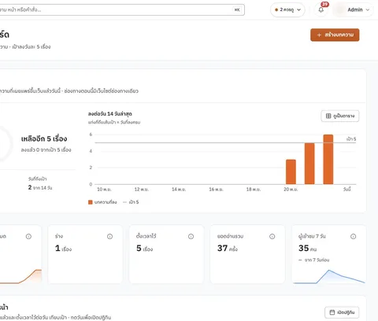
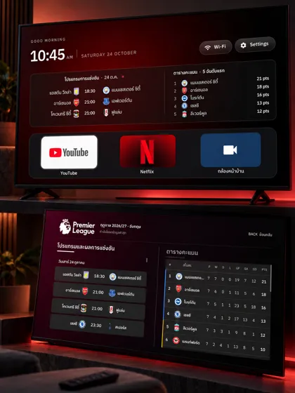
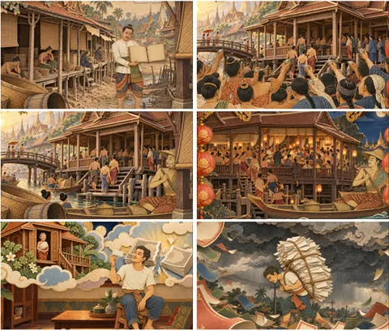
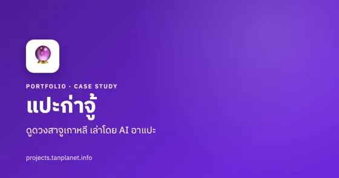
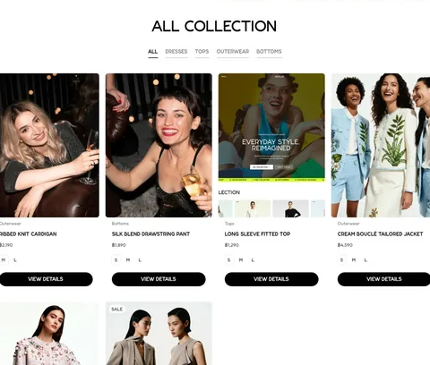
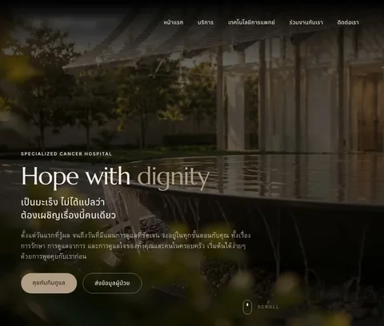
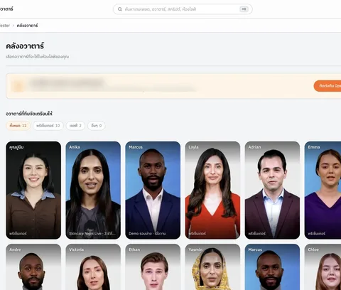

เครื่องผลิตบทความอัตโนมัติCMS · AI Content Pipeline
กล่องทีวี TX98Android TV · Security
Motion GraphicMotion · ContentTanPlanet LiveEmbedded · HardwareMegaCoachAI Coach · Fintech
แปะก่าจู้ (Saju Kaaju)AI Web App
Linen LookbookBrand Catalog · Web App
เว็บโรงพยาบาล 2 ภาษาHospital Site · Web AppUGC StudioAI Video Pipeline
AI Avatar Live CommerceAI Platformผมออกแบบโปรดักต์
แล้วสร้างจริงด้วย AI
Product Designer & AI Builder — งานจริง 40+ โปรเจกต์ ตั้งแต่ UX/UI ถึงเครื่องมือ AI ที่ใช้ทุกวัน
Hi, I'm Tan.
Product Designer & AI Builder.
I'm Natpakan Sirirat (Tan). I design intuitive digital experiences and build AI-powered tools that make complex things feel simple.Based in Thailand, I focus on UX/UI, design systems, and the intersection of design and technology.
ผม ณัฐปคัลภ์ ศิริรัตน์ (แทน) เป็น Product Designer ที่ออกแบบประสบการณ์ดิจิทัลให้ใช้งานง่ายและมีความหมาย พร้อมสร้างเครื่องมือที่ใช้ AI เพื่อช่วยให้การทำงานและการสร้างผลิตภัณฑ์ซับซ้อนกลายเป็นเรื่องที่เรียบง่ายสนใจเป็นพิเศษกับUX/UI, Design Systems และการเชื่อมต่อระหว่างงานออกแบบกับเทคโนโลยี

About me
I’m a Product Designer based in Thailand with a strong interest in using AI tools to enhance and evolve the design process.I approach every project by asking the right questions to deeply understand the problem, then craft simple, meaningful solutions centered around people.
Curious by nature, I draw from interests across philosophy, science, and culture to enrich my design thinking. Outside work, I love traveling, photography, and spending time with dogs — always finding new inspiration from the world around me.
ผมเป็น Product Designer จากประเทศไทย ที่สนใจการนำเครื่องมือ AI มาช่วยพัฒนาและยกระดับการทำงานออกแบบผมเริ่มต้นทุกโปรเจกต์ด้วยการตั้งคำถามที่เหมาะสม เพื่อทำความเข้าใจปัญหาอย่างลึกซึ้ง และออกแบบโซลูชันที่เรียบง่าย มีความหมาย และมีผู้ใช้งานเป็นศูนย์กลาง
ด้วยความอยากรู้อยากเห็นโดยธรรมชาติ ผมนำแรงบันดาลใจจากปรัชญา วิทยาศาสตร์ และวัฒนธรรม มาต่อยอดแนวคิดในการออกแบบในเวลาว่าง ผมชอบการเดินทาง การถ่ายภาพ และการใช้เวลากับสุนัข พร้อมค้นหาแรงบันดาลใจใหม่ ๆ จากโลกที่อยู่รอบตัว
Projects
งานล่าสุดจาก projects.tanplanet.work — เครื่องมือ AI, automation และงานออกแบบโปรดักต์
งาน UX/UI รุ่นก่อน (NocNoc, Kollab, Siriraj, Pukao) อยู่รวมใน projects.tanplanet.work หมวด Design Thinking